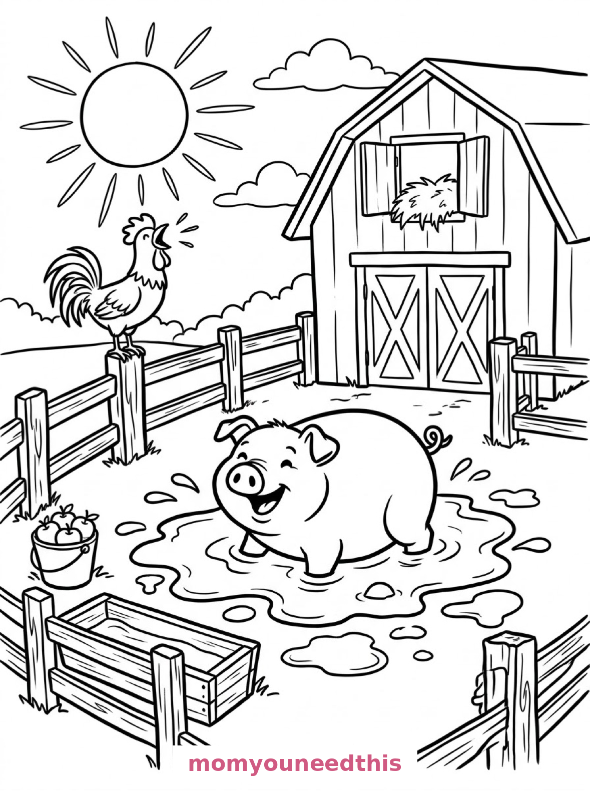
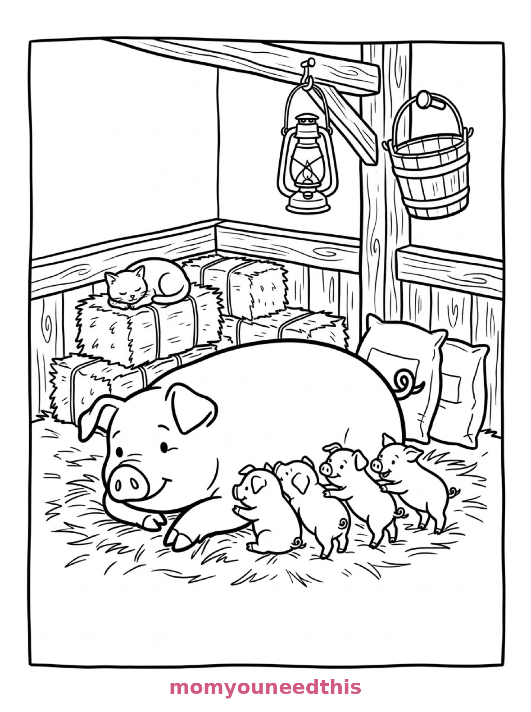
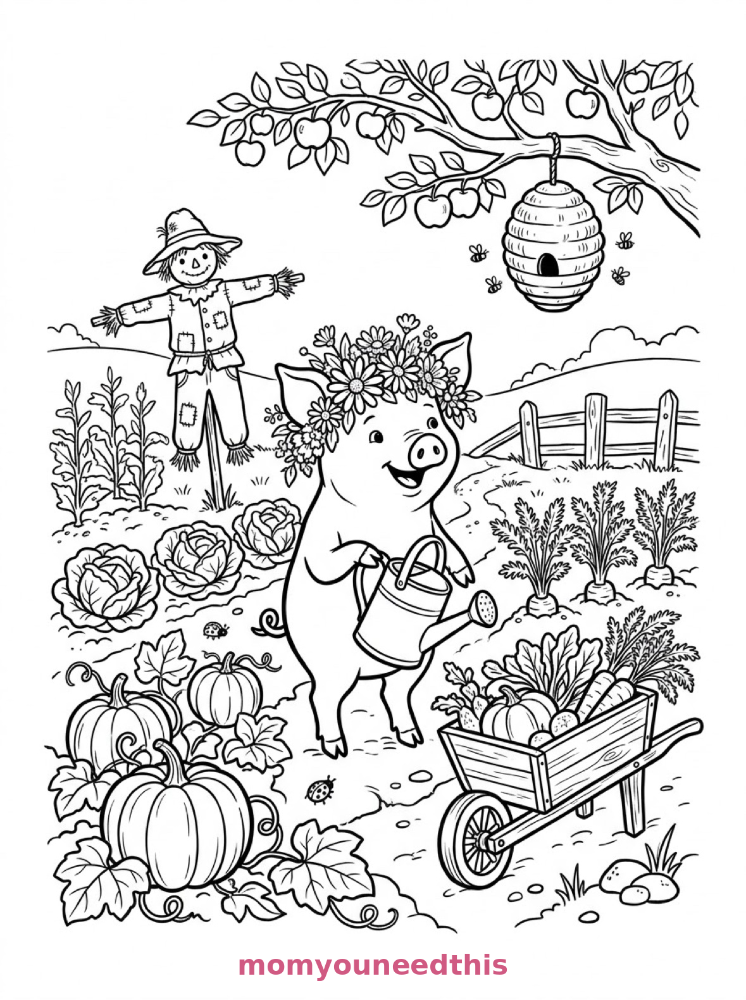

Free Pig Coloring Pages Mud Puddle, Piglets & Garden Printables
These free pig coloring pages trot through a whole farm day — a pig wallowing in its mud puddle, a mother pig with four piglets in the barn, and a pig in a flower crown watering its vegetable garden. Download the set below, print at home on letter-size paper, and let the coloring fun begin. No signup needed.
Last updated: October 23, 2026
Quick Answer
Yes — this page has three free printable pig coloring pages: a round pig wallowing happily in a mud puddle in its pen, a mother pig lying on straw with four piglets beside her, and a pig wearing a flower crown holding a watering can in a vegetable garden. Bold outlines and big spaces, made for little hands. Download, print on letter-size paper, and hand over the crayons — no signup, no cost.
At a Glance
- Ages: 3–8
- Pages: 3 free printables
- Format: Print at home, letter size
- Cost: Free, no signup
- Supplies: Crayons or markers
- Time: 10–20 minutes
🐷 Pig in the Mud Puddle Coloring Page

🎨 Download Your Free Mud Puddle Pig Coloring Page
A round pig wallows happily in a mud puddle inside a fenced farmyard pen, mud splatters drawn as rounded blobs around the puddle, a wooden trough and a bucket of apples beside the fence, a barn behind and a rooster crowing at a large sun — bold outlines, big spaces, zero signup.
⬇️ Download Free Mud Pig Page 🖨️ Print Mud Pig Page🎁 Free printable for preschoolers & kids
🐖 Mother Pig and Four Piglets Coloring Page

🎨 Download Your Free Piglet Family Coloring Page
A mother pig lies on straw in a barn stall with four piglets lined up beside her, bales of hay stacked behind them, a wooden bucket and a lantern hanging from a beam, sacks of feed against the wall and a cat asleep on a hay bale — bold outlines, big spaces, zero signup.
⬇️ Download Free Piglet Family Page 🖨️ Print Piglet Family Page🎁 Free printable for preschoolers & kids
🌸 Pig with a Flower Crown in the Garden Coloring Page

🎨 Download Your Free Garden Pig Coloring Page
A pig wearing a flower crown stands in a vegetable garden holding a watering can in one trotter, rows of cabbages, pumpkins and carrot tops growing around it, a scarecrow in the background, a wheelbarrow full of vegetables and a beehive in the apple tree overhead — bold outlines, big spaces, zero signup.
⬇️ Download Free Garden Pig Page 🖨️ Print Garden Pig Page🎁 Free printable for preschoolers & kids
More Coloring Pages
Tap any picture to open its theme page and download the free printable.


🐷 How To Use This Page
- Browse the three designs and pick the pig scene your child will love most.
- Tap download or print under that design — the file opens full-size, ready for letter-size paper.
- Print a couple of copies of the piglet stall — five pigs means five color plans.
- Color together with crayons or markers and oink responsibly.
🌻 Why Kids Love Pig Coloring Pages
Pigs are the comedians of the farmyard — round, pink and permanently pleased with themselves. These pages catch the three great pig moods: the mud wallow, the barn nap with babies, and the proud gardener in a flower crown. Every scene is a full farm story, not just an animal portrait.
A pig is also a perfect first coloring subject: one big round body, a curly tail, a snout that takes two dots. A finished pig always looks like a pig, which makes these pages confidence-builders for the youngest colorers in the house.
🐷 Meet the Three Pig Scenes on This Page
The mud wallow. A round pig wallowing happily in a mud puddle inside a fenced farmyard pen, mud splatters drawn as rounded blobs around the puddle, a wooden trough and a bucket of apples beside the fence, a barn with a hayloft door behind, and a rooster perched on the fencepost crowing at a large sun. It is the happiest page in the set — the mud is drawn as friendly blobs, ready to be the brownest brown you own.
The piglet stall. A mother pig lying on straw in a barn stall with four piglets lined up beside her, bales of hay stacked behind them, a wooden bucket and a lantern hanging from a beam, sacks of feed leaning against the stall wall, and a cat asleep on a hay bale in the corner. It is the sweetest page in the set — five pigs in a row, each one a slightly different size and shade.
The garden pig. A pig wearing a flower crown standing in a vegetable garden holding a watering can in one trotter, rows of cabbages, pumpkins and carrot tops growing around it, a scarecrow with a straw hat in the background, a wheelbarrow full of harvested vegetables beside the garden path, and a beehive hanging from the branch of an apple tree overhead. It is the prettiest page in the set — a whole vegetable garden to color around one proud gardener.
✏️ Pig Coloring Tips
- Pink is the classic, patches are the fun. A plain pink pig is perfect; a pig with a brown mud patch on one side tells the wallow story even better.
- Make the mud properly muddy. The richest brown in the box, all through the puddle and its splatter blobs — contrast makes the pink pig glow.
- Five pigs, five pinks. On the piglet page, give mother and each piglet a slightly different pink or peach — a gradient family.
- Harvest colors for the garden. Orange pumpkins, purple-green cabbages, orange carrot tops peeking out — the garden page is a vegetable rainbow.
🐷 Coloring Pages for Different Ages
For ages 3 to 4, start with the mud puddle. One big round pig and one big round puddle are all a little colorer needs to feel like a farmer.
For ages 5 to 6, the piglet stall is the sweet spot. Five pigs to color in a row, hay bales to fill, and a sleeping cat to find in the corner.
For ages 7 to 8, hand over the garden pig. The cabbages, the wheelbarrow, the scarecrow and the beehive reward careful coloring — the fullest farm scene in the set.
🌻 More Pig Fun After Coloring
Name the piglets: four piglets in a row is a naming ceremony waiting to happen. Write the names under each one, and the stall page becomes the family portrait of the barn.
For the whole farm, visit the farm coloring pages — and meet the pigs' pen neighbor on the duck coloring pages, ribbon and all.
🔗 More Free Printables You’ll Love
- Free Farm Coloring Pages Barn animals and farm scenes to print and color.
- Free Duck Coloring Pages A pond parade, a farmyard duck and a rainy day to color.
- Free Bunny Coloring Pages Garden, burrow and orchard bunnies to print and color.
- All Free Coloring Pages Browse every free coloring page on the site, organized by theme.
❓ Pig Coloring Pages FAQ
Are these pig coloring pages really free?
Yes — all three designs on this page are free original printables from MomYouNeedThis. Download them, print them at home, and color — no signup and no cost.
What ages are these coloring pages best for?
Kids ages 3 to 8 get the most from this set. The mud puddle pig is the gentlest start for younger children, while the piglet stall and garden scenes have the detail older kids enjoy.
How do I print a coloring page?
Tap the download button under the design you want, then print the file on regular letter-size paper. The print button opens the full-size page in a new tab if you prefer to print from there.
Is there a piglet coloring page in this set?
Yes — the second design shows a mother pig lying on straw with four piglets lined up beside her in a barn stall, with hay bales behind them and a cat asleep on one bale.
Can I make a pig coloring book from these pages?
Yes — print all three designs, stack them in order, and staple along the left edge. Add a cover sheet with your child's name for a finished homemade pig coloring book.